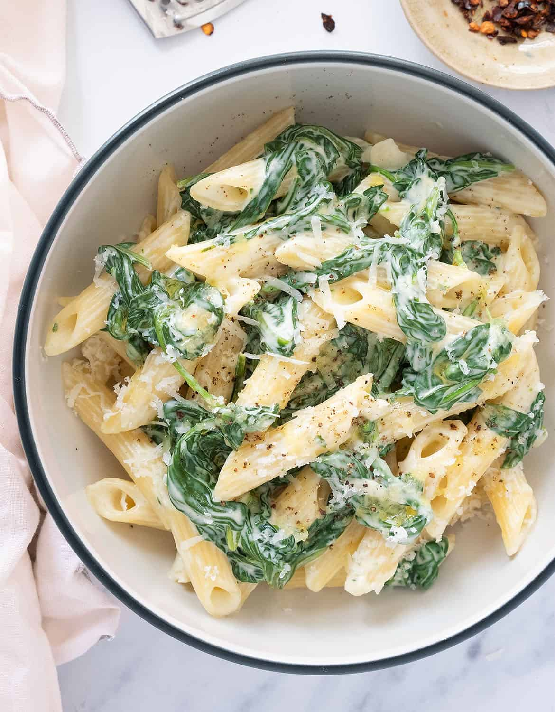

Pasta

Pasta Recipe
Whip up this cheap, simple and satisfying meal in just 30 minutes.
Ingredients
- 280g penne
- 280g broccoli, cut into florets
- 25g butter
- 280g penne
- 300ml milk
- 1 tbsp wholegrain mustard
- 140g mature cheddar, grated
Steps
- Cook the pasta, adding the broccoli for the final 4-5 mins and cooking until tender. Drain well, then heat the grill.
- Heat the butter in a saucepan and stir in the flour. Cook for 1 min, then gradually add the milk, stirring well between each addition. Bring to the boil, stirring, then simmer for 2 mins, before stirring in the mustard, half the cheese and seasoning.
- Mix the pasta and broccoli into the sauce and spoon into an ovenproof dish. Scatter over the remaining cheese and place under a hot grill for 3-4 mins until golden and bubbling.